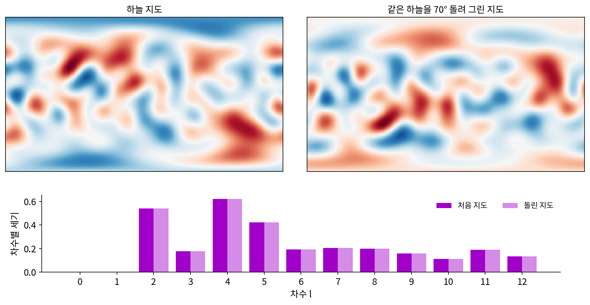
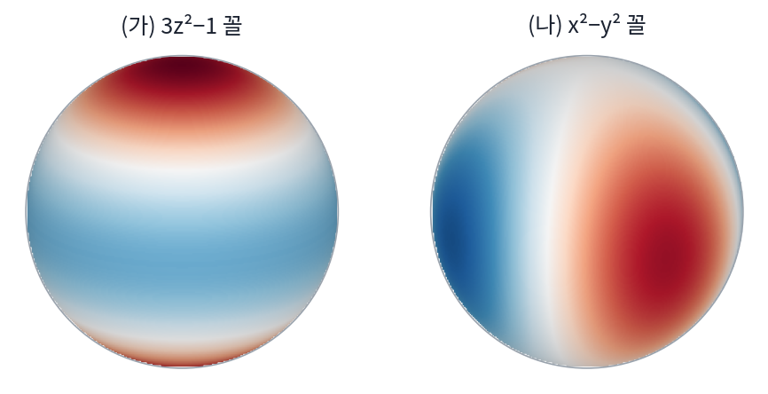

차수별 세기: 돌려도 변하지 않는 스펙트럼
방의 빛을 계수 9개로 적었다. 그런데 측정기를 실수로 옆으로 눕혀 들고 쟀다면, 같은 방인데도 9개 숫자는 달라진다. 「위가 밝다」던 z 계수가 다른 칸으로 옮겨 간다. 두 사람이 같은 방을 서로 다른 방향으로 재서 숫자를 가져오면, 같은 방인지 어떻게 알아볼까? 화살표 사슬로 글자를 그릴 때는 글자를 돌리면 화살표마다 같은 회전이 곱해져 화살표의 길이가 그대로였다. 구에서는 무엇이 「길이」 노릇을 할까?
역사: 방향이 없는 하늘의 얼룩을 재는 법
돌려도 그대로인 숫자가 가장 절박했던 사람들은 우주론 학자들이다. 하늘 어느 쪽에서나 거의 같은 세기로 오는 우주 배경 복사(빅뱅 뒤 남은 빛)에는 아주 작은 얼룩이 있으리라 예상되었다. 1992년 스무트(George Smoot)와 동료들은 위성 COBE의 측정기 DMR로 이 얼룩을 처음 찾았다고 발표했다. 하늘을 쌍극 성분까지 빼고 매끈하게 다듬었을 때 남은 얼룩의 크기는 30 μK(마이크로켈빈) 정도였다. 측정기가 7°보다 작은 것은 가려 보지 못했으므로, 볼 수 있었던 것은 차수 20쯤까지의 굵은 얼룩이었다.
이론은 「어느 쪽에 얼룩이 있다」를 예측하지 않기 때문에, 얼룩 지도 자체는 이론과 견줄 수 없다. 하늘에는 특별한 방향이 없어서, 이론이 말할 수 있는 것은 「어떤 크기의 얼룩이 얼마나 센가」뿐이다. 그래서 학자들은 지도를 구면 조화로 전개한 뒤 차수마다 계수의 세기를 모은 그래프로 이론과 관측을 맞대었다. 2000년 드 베르나르디스(Paolo de Bernardis)와 동료들은 남극 하늘에 띄운 풍선 실험 BOOMERanG의 지도에서 이 그래프의 첫 봉우리가 차수 197 ± 6(각도로 1°쯤)에 있다고 보고했고, 이것이 평평한 우주와 맞는다고 적었다. 논문 제목도 「우주 배경 복사의 고해상도 지도에서 본 평평한 우주」다.

계수 9개를 방째로 돌리면
무광 공 밝기의 계수 9개를 방째로 돌려 보자. 방향 30곳에서 맞춘 값 대신, 구 전체에서 적분한 계수를 쓴다. 처음 계수는 차수 0이 1.9011, 차수 1이 (y, z, x) 순서로 (0, 0.3397, 0.5365), 차수 2가 (xy, yz, 3z² − 1, xz, x² − y²) 순서로 (0, 0, 0.1655, 0.0990, 0.1976)이다. 차수마다 계수 제곱을 더하면 차수 0이 3.6143, 1이 0.4032, 2가 0.0762다.
| 돌린 방법 | 차수 1 계수 (y, z, x) | 차수 2 계수 (xy, yz, 3z² − 1, xz, x² − y²) | 차수마다 제곱의 합 |
|---|---|---|---|
| 돌리지 않음 | (0, 0.3397, 0.5365) | (0, 0, 0.1655, 0.0990, 0.1976) | 3.6143, 0.4032, 0.0762 |
| 수직축 둘레 90° | (0.5365, 0.3397, 0) | (0, 0.0990, 0.1655, 0, −0.1976) | 3.6143, 0.4032, 0.0762 |
| 남북축 둘레 90° (천장 등이 동쪽 벽으로) | (0, −0.5365, 0.3397) | (0, 0, 0.0883, −0.0990, 0.2422) | 3.6143, 0.4032, 0.0762 |
| 축 (1, 1, 1) 둘레 50° | (0.1914, 0.0854, 0.5994) | (0.0879, −0.1383, −0.0169, 0.1493, 0.1637) | 3.6143, 0.4032, 0.0762 |
차수 0 계수 1.9011은 어떻게 돌려도 그대로다(평균 밝기니까). 차수 1의 세 계수는 화살표처럼 돈다. 남북축 둘레 90°에서 (x, y, z) = (0.5365, 0, 0.3397)이던 화살표가 (0.3397, 0, −0.5365)로 돌았고, 이것은 그 회전 행렬을 화살표에 곱한 값과 같다. 차수 2의 다섯 계수도 서로 섞이며 바뀌지만, 표의 마지막 칸, 차수마다 계수 제곱을 더한 값은 네 줄 모두 같다. 회전은 계수를 같은 차수 안에서만 섞는다. 차수 2의 xy 꼴 하나만 있는 함수를 동서축 둘레로 30° 돌리면 0.866 × (xy 꼴) + 0.5 × (xz 꼴)이 되어 여전히 차수 2 안에 있다.
왜 같은 차수 안에서만 섞일까? 작은 원 평균은 어느 방향으로 돌려도 같은 규칙이니, 돌린 뒤에 평균을 내나 평균을 낸 뒤에 돌리나 같다. 그러니 차수 l의 구면 조화를 돌린 함수도 작은 원 평균에서 돌리기 전과 같은 수를 곱받고, 그래서 다시 차수 l이다. 또 회전은 구 위의 넓이를 바꾸지 않으므로 함수의 제곱을 구 전체에서 적분한 값이 그대로이고, 구면 조화가 정규 직교 기저이므로 그 제곱 적분은 계수 제곱의 합이다. 차수끼리 섞이지 않고 전체 제곱의 합은 지켜지니, 차수마다의 제곱의 합도 지켜진다.
이렇게 차수마다 계수 제곱을 더한 값을 차수별 세기 (각도 파워 스펙트럼 / angular power spectrum)라 한다. 우주 배경 복사에서는 이 합을 2l + 1로 나눈 평균을 Cₗ로 적는 것이 관례다.
측정기를 눕혀 든 두 사람은 차수별 세기를 맞대 보고, 다르면 다른 방이라고 하면 된다. 그러나 같으면 같은 방이라고 해도 되는지는 아래 문제 9에서 따진다.
ML에서: 차수마다 따로 도는 특징을 쓰는 신경망
분자처럼 원자 여러 개가 모인 것을 다루는 신경망은 입력을 어떻게 돌려 놓아도 에너지는 같고, 원자에 걸리는 힘은 입력과 똑같이 돌아가야 한다. 돌린 분자를 데이터로 잔뜩 더 넣어 가르칠 수도 있지만, 구면 조화를 쓰면 「돌려도 에너지는 그대로, 힘은 같이 돈다」는 성질을 구조에 박을 수 있다. 토머스(Nathaniel Thomas)와 동료들의 텐서 장 신경망(2018)은 필터를 구면 조화로 만들어, 층마다 스칼라(차수 0), 벡터(차수 1), 더 높은 차수의 특징을 주고받게 했다. 같은 해 코언(Taco Cohen)과 동료들의 구면 합성곱 신경망(2018)은 구 위의 신호에 대한 합성곱을 회전에 등변하게 정의하고, 일반화한 고속 푸리에 변환으로 빠르게 계산했다. 바츠너(Simon Batzner)와 동료들의 NequIP(2022)는 이런 등변 합성곱으로 원자 사이 힘을 예측해, 학습 데이터를 최대 천 배 적게 쓰고도 앞선 모델보다 나은 정확도를 냈다고 보고했다.
이 모델들의 특징은 차수 l마다 2l + 1개짜리 묶음이다. 분자를 돌리면 묶음 안의 숫자는 같은 차수 안에서만 섞이고, 묶음마다의 제곱의 합(차수별 세기)은 그대로다. 마지막에 에너지처럼 돌려도 그대로인 답을 낼 때는 이런 불변량을 쓰는데, 차수별 세기만 쓰면 충분할지는 아래 문제 9에서 따진다.
문제 7. 나침반을 돌려 읽은 바람
바람이 동쪽으로 3 m/s, 북쪽으로 4 m/s 로 분다. (가) 풍속은 몇 m/s 인가? (나) 동쪽 대신 동쪽에서 북쪽으로 30° 돌린 쪽을 첫째 축, 그에 수직인 쪽을 둘째 축으로 삼아 다시 읽으면 두 성분은 얼마인가? (다) 성분마다의 제곱과 그 합은 축을 돌리기 전과 후에 어떻게 되는가?

(가)는 √(9 + 16) = 5 m/s요. (나)는 첫째 축 성분이 3 cos 30° + 4 sin 30° = 4.598, 둘째 축은 −3 sin 30° + 4 cos 30° = 1.964예요.

(다)는요? 성분 제곱을 하나씩 봐요.

9와 16이던 게 21.142와 3.858이 됐어요. 성분 하나만 보면 많이 바뀌었는데, 합은 둘 다 25예요.

축을 돌려도 화살표 길이는 그대로니까. 성분 하나하나는 어느 축으로 읽느냐에 달린 숫자고, 길이의 제곱은 바람 자체의 숫자야.

방의 계수 표에서 차수 1의 세 계수가 이거였어요. 위·동·북 쪽 밝기 차이를 화살표 하나로 모은 거라서, 방을 돌리면 성분은 바뀌어도 제곱의 합 0.4032는 그대로였어요.

성적표를 과목별로 보면 학기마다 바뀌어도 총점이 같은 거랑 비슷하네요. 아, 총점은 제곱을 안 하는구나.
문제 8. 3z² − 1 을 눕히면
3z² − 1 꼴 함수를 동서축(x 축) 둘레로 90° 돌린다. (가) 돌린 함수를 x, y, z 로 적어라. (나) 돌린 함수를 3z² − 1 과 x² − y² 의 합으로 적고, 차수 2 의 세기가 그대로인지 확인하라. 3z² − 1 의 계수는 3z² − 1 꼴 구면 조화로 3.1707 이다. (다) 차수 1 함수 z 를 어떤 축으로 얼마나 돌리면 차수 2 성분이 생길 수 있는가? (위젯 3의 「3z²−1 그대로 (문제 8)」을 불러온 뒤 「동서축(x) 둘레 90° 돌리기」를 눌러 보자.)
동서축으로 90° 돌리면 북극이 남쪽이나 북쪽 수평선으로 가니까, z 자리에 y가 들어가서 3y² − 1이요.
(나)는 3y² − 1을 3z² − 1 쪽과 x² − y² 쪽으로 나눠야 하는데… y² 혼자로는 안 되니까 x² + y² + z² = 1을 써야겠다.
어떤 식이 나와요?
3y² − 1 = −½(3z² − 1) − (3/2)(x² − y²)요. 점 하나에 넣어 보니 양쪽 다 −0.25로 맞아요.
계수로는 어떻게 되죠? 세기도 확인해 봐요.

위젯에서 돌리니까 3z² − 1 꼴 계수가 3.171에서 −1.585로, x² − y² 꼴 계수가 0에서 −2.746으로 바뀌어요. 넉 자리까지 계산하면 −1.5853과 −2.7459라서 1.5853² + 2.7459² = 10.0531이고, 3.1707²도 10.0531이에요. 같아요.

(다)는요? z를 아주 이상한 축으로 120°쯤 돌리면 차수 2가 조금 생기지 않을까요?

축 (1, 1, 0) 둘레 120°를 해 봤는데 차수 2 세기가 0이에요. 차수 1 세기 4.1888만 남아요.

z를 돌리면 어느 방향 벡터와의 내적, ax + by + cz 꼴이 될 뿐이잖아.
그 꼴은 몇 차 다항식이죠?

1차요. 1차 다항식을 돌리면 1차 다항식이니까 2차가 생길 수가 없어요. 작은 원 평균이 차수 1에 곱하는 수도 돌려도 안 바뀌고요.

행렬을 직교 행렬로 바꿔 적어도 고윳값은 그대로인 거랑 같은 이야기네. 회전이 차수를 못 바꾸는 건 라플라시안의 고윳값을 못 바꾸기 때문이야.
문제 9. 차수별 세기가 같은 두 모양
아래 두 함수는 모두 차수 2 의 구면 조화 하나로 되어 있고, 차수 2 의 세기가 1 이 되게 크기를 맞췄다. (가) 3z² − 1 꼴, (나) x² − y² 꼴. 차수별 세기만을 특징으로 쓰는 분류기에 두 모양을 넣는다. (가) 두 모양의 차수별 세기는 어떻게 되는가? (나) (나)를 잘 돌리면 (가)가 되는가? 두 함수의 가장 큰 값과 가장 작은 값은 각각 얼마인가? (다) 분류기가 두 모양을 가르려면 무엇을 더 써야 하는가? (위젯 3의 문제 9 불러오기로 두 모양을 돌려 보자.)

(가)는 둘 다 차수 2 세기 1이고 나머지는 0이에요. 그리고 차수별 세기는 돌려도 그대로라고 했으니까, 세기가 같으면 하나를 돌린 게 다른 하나겠죠. (나)는 「된다」요.
돌리면 함수의 가장 큰 값은 바뀌나요?
아니요, 같은 값들이 자리만 옮기니까요. 계산해 보니 (가)는 가장 큰 값 0.6306, 가장 작은 값 −0.3153이고 (나)는 0.5462, −0.5462예요. 가장 큰 값이 다르니 아무리 돌려도 안 겹쳐요. 무작위 축 200개로 돌려 봐도 (나)의 가장 큰 값은 0.5463을 못 넘어요.
「돌리면 세기가 같다」는 맞는데 거꾸로 「세기가 같으면 돌린 것」은 아니었네. 양수인 넓이도 (가)는 42.6%, (나)는 딱 50%야.
차수 2 계수는 다섯 개예요. 회전으로 맞출 수 있는 건 몇 개죠?
회전의 자유도만큼, 셋이요. 그러면 다섯 개를 세기 하나로 줄이면 하나가 더 사라지네요.

그래요. 그럼 (다)는요? 돌려도 그대로이면서 두 모양을 가르는 수가 있을까요?

함수의 세제곱을 구 전체에서 적분한 값은 어때요? 돌려도 값들이 자리만 옮기니까 그대로일 것 같아요.
계산해 보니 (가)는 0.1802, (나)는 0이야. 이건 가르네.
차수 2 계수끼리 세 개를 곱해 만든 수라서, 계수 묶음을 그대로 들고 서로 곱해야 나와.
그래서 등변 신경망들이 처음부터 세기로 줄이지 않고 차수마다 묶음을 그대로 들고 다니다가 서로 곱하는 거구나. 글자 윤곽을 화살표 길이의 비로만 적으면 ㄱ과, ㄱ을 180° 돌린 ㄴ을 못 가르던 일이 구에서도 일어나는 거네요.